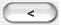
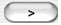

), ("ALL") and (
), ("ALL") and ( ) buttons.
Also atoms types to compare datasets can be selected.
) buttons.
Also atoms types to compare datasets can be selected.
This option compares proteins in a datasets, using the Root Mean Squared Distance(RMSD).
This option is available in the menu "Analyze/RMSD", which will launch the following window:
The RMSD-IDX window
In the RMSD window there are three panels for settling the comparison process data, first is Datasets panel, where all files are loaded. In the
Target panel, shows the file that is used like reference for comparison. It can be selected using () and () buttons; Ultimatelly the last Compare panel,
shows the files to compare with the Target. Those files can be selected using (), ("ALL") and () buttons.
Also atoms types to compare datasets can be selected.
Atoms Types:
Include only the carbon alfa atoms of each residue.
Include only the backbone atoms(N, C, Ca, O) of each residue.
Include all atoms of each residues.
When all needed options are configured, continue clicking the "Calculate" button to start the process.
Options are provided for comparison tests in the "Advanced" panel.
The Advanced panel RMSD-Ca
The two options contained in the panel are:
This option superposes the structures firstly, considering all the residues, and then selects the N best distances and computes the RMSD with them.
This option computes RMSD calculated using residues ranges,
which can be added or deleted with the ( ) and(
) and( ) buttons. In addition these ranges can be applied to the Target, Decoys or both.
) buttons. In addition these ranges can be applied to the Target, Decoys or both.

The RMSD Interval Window